An Eternal is a blessing you lock in before the match starts. There are 16 of them, and
the choice can look like a wall of text. The short version: each one rewards a different way of playing.
Pick the one that matches how you already fight, then use its two minor slots to lean further in.
Tap a playstyle to bring the Eternals that suit it to the top. Nothing is hidden, and an
Eternal can suit more than one.
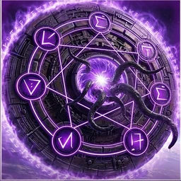
Aion
Mana / Economy Mage
Midlane · Support
Gold incomeManaCooldownsGrows over the gameFarming & camps
I cast abilities
Major blessing — always onCasting a spell grants 1 Mana Regeneration for 8s (stacks 5x). Spells also grant gold equal to 6% of damage dealt to Enemy Heroes.
Why it's picked Mana regen each time you cast a spell, plus gold income from spell damage on enemy heroes: mid-lane mages and some ability-focused supports and off-laners take it to cast freely and buy items sooner.
Who runs it · ranked, this patch
Midlane 17% · Support 9% · Offlane 5% of games in each role
Dekker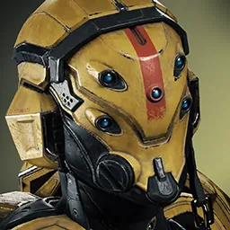
Gadget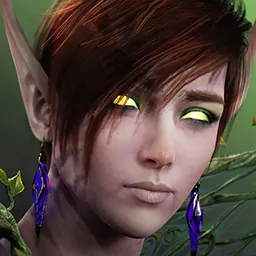
The FeyShinbiArgus
Most common pair: Philosopher + Arcane Resonance (26%)
The two minor slots — pick one from each▾
Slot 1
-
Philosopher 38% take it
Every 10s, generate 4 gold (faster with Ability Haste).
The common pick for steady gold income: free gold on a timer, coming faster with more ability haste.
-
Sacrifice 29% take it
Damaging an Enemy Hero with an ability grants 3.5% Missing Mana regeneration over 5s. Hero kills regenerate 25% Missing Mana over 5s.
For heroes who run dry in long trades: ability hits and hero kills refill missing mana.
-
Bottomless Vial 33% take it
Killing a River Buff restores a Potion charge and grants +5 Magical Power permanently.
When you take river buffs often: each one refills a potion charge and adds permanent magical power.
Slot 2
-
Arcane Resonance 45% take it
Basic ability cooldowns and Philosopher progress 0.75% faster per 1 Mana Regen, up to 50%.
The common pick, best paired with Philosopher: more mana regen speeds up basic ability cooldowns and Philosopher's gold.
-
Perfection 19% take it
While above 85% Health, gain 30 Ability Haste.
For mages who poke from a safe distance and rarely get hit: shorter cooldowns while near full health.
-
Runic Focus 36% take it
Gain 0.2% increased Magical Power per 1% current Mana.
For heroes with a big mana pool who keep it full: more magical power the fuller your mana bar.
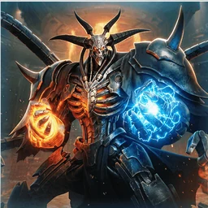
Demiurge
Item Scaling
Carry · Midlane
ManaToughnessDamage boostCooldownsBasic attacksMovement speedGrows over the game
I scale late
Major blessing — always onIncrease stats gained from Items (excluding passives) by 10%, and damage dealt by Item Effects by 10%.
Why it's picked Makes your items stronger, raising the stats they give and the damage of item effects: junglers, plus some carries and mid-laners, take it to get more out of every item they buy.
Who runs it · ranked, this patch
Jungle 6% · Carry 5% · Midlane 5% of games in each role
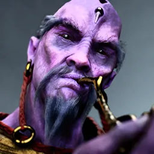
Feng Mao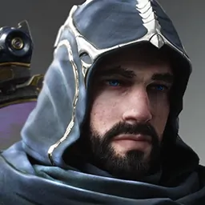
Gideon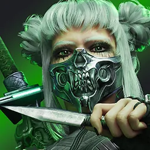
Yurei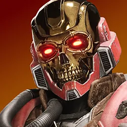
Legion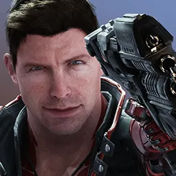
TwinBlastMost common pair: Construct + Memory Leak (27%)
The two minor slots — pick one from each▾
Slot 1
-
Tri-Core 42% take it
Deal 5% bonus damage On-Hit, randomly Physical, Magical or True.
For auto-attack heroes: every hit deals bonus damage of a random type.
-
Construct 46% take it
Gain 10 Health and 1 Ability Haste per Level.
The usual pick for steady value: more health and shorter cooldowns every level.
-
Bio-Mechanical Fusion 12% take it
Gain +1 Physical Power per 8 Magical Power you possess.
For hybrid heroes who build magical power but deal physical damage: turns some magical power into physical power.
Slot 2
-
Cursed Corrupted 11% take it
Convert each 1% Critical Chance into 0.8 Ability Haste (you lose the converted crit stat).
For ability heroes whose items give critical chance they do not use: turns it into shorter cooldowns.
-
Memory Leak 50% take it
Ability casts grant 5% of their Mana or Energy cost as permanent Max Mana. At 500 bonus Max Mana, gain 5% Movement Speed.
The usual pick for heroes who cast often: casts permanently raise max mana, and enough bonus mana adds movement speed.
-
Bloatware 39% take it
Gain 0.5% increased Damage and 0.75% Damage Reduction per Item.
For long games: more damage and less damage taken for each item you own.
ManaHealing & lifestealShieldsDamage boostCooldownsBasic attacksMovement speedGrows over the gameHelps allies
I heal off damageI hold the frontI keep allies alive
Major blessing — always onHealing or Shielding a target (including yourself) grants them 10% Total Attack Speed and empowers their Basic Attacks to deal 10% bonus Magical Damage On-Hit for 4s.
Why it's picked Healing or shielding someone, yourself included, gives them faster attacks and bonus magic damage on hits: healing and shielding supports take it to make their carries hit harder.
Who runs it · ranked, this patch
Support 21% · Jungle 1% of games in each role
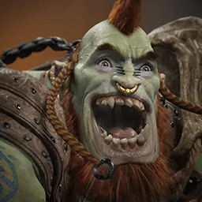
Narbash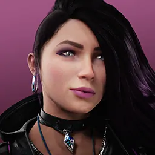
PhaseMurielZinxMournMost common pair: Preservation + Fervour (26%)
The two minor slots — pick one from each▾
Slot 1
-
Illumination 17% take it
Gain Health Regeneration equal to your Bonus Mana Regeneration.
When building mana regen items: you also gain that much health regen.
-
Preservation 58% take it
Healing or shielding you receive is increased by 10%.
The usual pick: healing and shields you receive are stronger.
-
Revelation 25% take it
Casting an Ability reduces current Basic Ability Cooldowns by 0.3s.
For supports who cast often: every ability cast shortens your basic ability cooldowns, so heals come back sooner.
Slot 2
-
Fervour 56% take it
Basic Attacks against Enemy Heroes heal you and allies within 1000 units for 2 (+0.5 per level)(+5% Magical Power).
The usual pick for supports who auto-attack in lane: hitting enemy heroes heals you and nearby allies.
-
Omnipresent 29% take it
Gain 7% Movement Speed when out of combat.
For roaming supports: extra movement speed while out of combat.
-
Delayed Fate 14% take it
20% of Ability damage taken is dealt to you as a 3s DoT instead.
Against burst mages: part of ability damage you take is spread out over a few seconds.
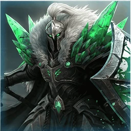
Idrisil
Armor Tank
Offlane · Support
Healing & lifestealShieldsToughnessArmor shredDamage boostBasic attacksSlows enemiesGrows over the game
I hold the front
Major blessing — always onWhile off cooldown and above 30% Max Health, gain 15% increased Physical and Magical Armor. Falling below 30% Health consumes this bonus to grant a 4s Shield equal to 150% of your total Armor (CD: 75–32.5s).
Why it's picked Extra armor while healthy that turns into a big shield when your health drops low: tank supports, off-lane tanks and some junglers take it to survive burst damage.
Who runs it · ranked, this patch
Support 7% · Offlane 4% · Jungle 3% of games in each role
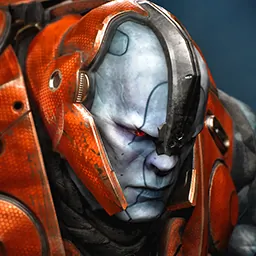
Steel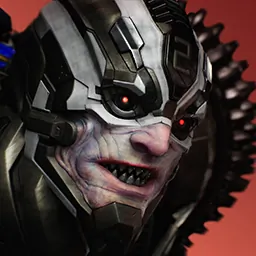
Riktor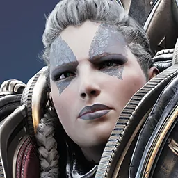
TerraSteelGreystoneMost common pair: Mending + Glacier (24%)
The two minor slots — pick one from each▾
Slot 1
-
Cold Hearted 25% take it
Enemies that basic attack you lose 3% movement speed for 2s (stacks 4x).
Against auto-attack carries: enemies who basic attack you get slowed.
-
Mending 40% take it
After taking Hero damage, restore 3/4/5/6% Missing Health at Levels 1/6/11/16 over 8s.
The usual pick: after taking hero damage, you heal part of your missing health.
-
Frost Snap 35% take it
Deal 10% Bonus Damage to Immobilized or Slowed Targets.
For tanks with slows, stuns or roots: bonus damage to slowed or immobilized targets.
Slot 2
-
Icy Touch 37% take it
Your Basic Attacks reduce enemy Attack Speed by 3% for 3s (stacks 4x).
Against auto-attack carries and fighters: your basic attacks slow their attack speed.
-
Glacier 46% take it
Permanently gain 1 Magical Armor per 300 total gold earned.
The usual pick against magic damage: magical armor keeps growing as you earn gold.
-
Diamond Tip 17% take it
Gain 4% increased Physical and Magical Penetration per finished item.
For tanks who want to deal damage: more armor penetration for each finished item.
Healing & lifestealShieldsToughnessArmor shredDamage boostCooldownsUltimateBasic attacksMovement speedGrows over the game
I auto-attackI cast abilitiesI dive and duel
Major blessing — always onAttacks and abilities against Enemy Heroes apply a stack of Rust for 5s. Each stack shreds 2% (+0.2% per Level) Physical Armor and Magical Armor, stacking up to 4 times. Gain 75% of the Armors shredded.
Why it's picked Your hits on heroes stack Rust, which shreds their armor and gives you part of it: off-laners, supports and some carries and junglers take it to make enemies easier for the whole team to damage.
Who runs it · ranked, this patch
Offlane 7% · Support 5% · Jungle 2% of games in each role
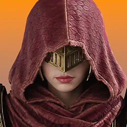
ScarlettMournRiktorLegionGreystoneMost common pair: Patina + Fracture (27%)
The two minor slots — pick one from each▾
Slot 1
-
Frequency 42% take it
Gain 2% Total Attack Speed and 2 Ability Haste per Rust stack currently applied.
For heroes who hit often: faster attacks and shorter cooldowns for each Rust stack on enemies.
-
Patina 54% take it
Gain a 30 (+14 per level) Shield when not taking damage for 10s. Gain 4% Movement Speed while the shield holds.
The usual pick: a shield after a break from damage, plus speed while it holds.
-
Dampening 4% take it
Incoming damage from enemies farther than 1100 units away is reduced by 10%.
Against long-range poke: take less damage from enemies far away.
Slot 2
-
Peal 39% take it
Gain 15 Ultimate Ability Haste. Upon casting your ultimate, attacks and abilities apply maximum stacks of Rust for 4s. 20s cooldown.
For heroes whose ultimate starts fights: shorter ultimate cooldown, and casting it applies full Rust instantly.
-
Fracture 48% take it
Deal 4% (+0.2% per level) more damage against targets with maximum stacks of Rust.
The usual pick: more damage against targets with full Rust stacks.
-
Resonant Repair 13% take it
Whenever you are Immobilized, you restore 3% of your Maximum Health over 4s and gain 20 Tenacity for 4s.
Against heavy crowd control: being stunned or rooted heals you and helps you shake it off.
Recorded as "Rust" from the 1.16 capture. Rust is the armour-shred DEBUFF this Eternal applies; the Eternal itself is Knell, as the 1.16 notes ("Knell Dampening") and the 1.16.4 notes ("Knell’s Major blessing") both name it.
Gold incomeHealing & lifestealAnti-healToughnessDamage boostBasic attacksMovement speedGrows over the gameFarming & camps
I hold the front
Major blessing — always onGain 5% (+1% per Level) increased Maximum Health, and bonus size equal to 0.5% of your Maximum Health.
Why it's picked More max health that grows with level, plus a bigger body: tank supports, off-lane tanks and some junglers take it to soak damage. The Voracity minor adds small gold income from unit kills.
Who runs it · ranked, this patch
Support 24% · Offlane 19% · Jungle 13% of games in each role
SteelRiktorGreystoneRampage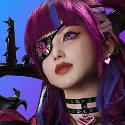
Adele
Most common pair: Regenerative Tissue + Cannibalism (42%)
The two minor slots — pick one from each▾
Slot 1
-
Voracity 31% take it
Killing an Enemy Unit restores 0.75% of your Maximum Health and grants 2 Gold.
For gold income while farming: each unit kill heals you a little and gives gold.
-
Regenerative Tissue 60% take it
After 8s without taking Hero damage, regenerate 0.2/0.4/0.7/1% Max Health per second at Levels 1/6/11/16.
The usual pick: health regen after a short break from hero damage, so you stay in lane longer.
-
Festering Wounds 9% take it
Your DoT abilities and Immobilizing Effects reduce Enemy Heroes' healing by 45% for 3s.
Against healing-heavy teams: your damage over time and stuns or roots cut enemy healing.
Slot 2
-
Cannibalism 68% take it
Takedowns permanently increase your Maximum Health by 25.
The usual pick: every takedown permanently adds max health.
-
Feeding Frenzy 21% take it
Gain +10% Attack Speed per Enemy Hero within 1200 units.
For tanks who basic attack in fights: faster attacks for each enemy hero nearby.
-
Predator 11% take it
Camp Leader kills grant 10% Bonus Damage and 4% Movement Speed for 20s, with 100% bonus duration for Epic Monsters.
For junglers: killing camp leaders gives bonus damage and speed, lasting longer after epic monsters.
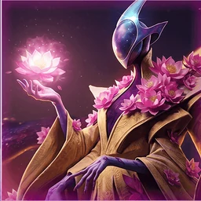
Lotus
Adaptive Flex
Healing & lifestealToughnessDamage boostCooldownsMovement speedGrows over the gameHelps allies
I want a bit of everything
Major blessing — always onEvery 2 minutes and every Takedown randomly grants +1% Damage, +4 Ability Haste, +0.75% Move Speed, or +1.25% Max Health.
Why it's picked Random small boosts to damage, cooldowns, speed or health on a timer and with every takedown: junglers, mid-laners, supports and carries take it as a flexible pick that keeps growing all game.
Who runs it · ranked, this patch
Jungle 12% · Midlane 8% · Support 7% of games in each role
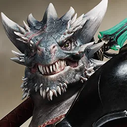
Zarus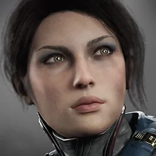
Lt. BelicaRevenantFeng Mao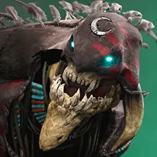
KhaimeraMost common pair: Early Bloom + Immaculate (20%)
The two minor slots — pick one from each▾
Slot 1
-
Early Bloom 38% take it
Gain an additional Level upon reaching Level 12.
The most common pick: an extra level partway through the game, for heroes who spike with levels.
-
Flawless 32% take it
Ability hits on Enemy Heroes heal you and allies within 1000 units for 8 (+10% Magical Power), once per cast.
For ability heroes and supports: ability hits on enemy heroes heal you and nearby allies.
-
Masterpiece 30% take it
Kills grant 4% Bonus Damage and 5% Movement Speed for 12s, stacking up to 5 times.
When you expect to chain kills: each kill gives stacking damage and speed for a short time.
Slot 2
-
Immaculate 38% take it
Gain 10% Damage Reduction above 85% current health.
The most common pick: take less damage while near full health, good for backline heroes.
-
Prima Donna 31% take it
Deal 10% increased damage to Enemy Heroes, but take 6% increased damage from all sources.
For heroes who avoid getting hit: more damage to heroes, but you take more damage too.
-
Fragrance 32% take it
Deal 4% increased Magical Damage and 12% increased True Damage to Enemy Heroes within 800 units.
For close-range magic or true damage heroes: more damage to enemy heroes near you.
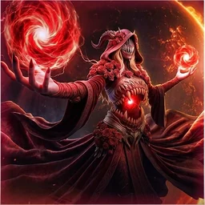
Marrow
Lifesteal Bruiser
Jungle · Offlane
Gold incomeHealing & lifestealAnti-healDamage boostBasic attacksExecute & %health damage
I hold the frontI heal off damageI dive and duel
Major blessing — always onHeal for 6%/7%/8%/9% of damage dealt to Heroes, increased up to 15%/20%/25%/30% based on your Missing Health. (65% effectiveness for AoE attacks, 15% against monsters.)
Why it's picked Heals you for part of the damage you deal to heroes, healing more the lower your health: off-lane and jungle fighters, plus some carries, take it to survive long fights. The Roses minor adds gold income from takedowns.
Who runs it · ranked, this patch
Offlane 4% · Jungle 4% · Carry 3% of games in each role
Revenant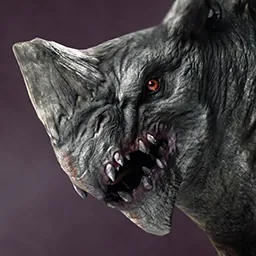
GruxKhaimera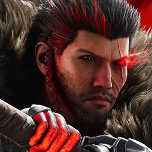
BayleScarlett
Most common pair: Blood Bank + Roses (20%)
The two minor slots — pick one from each▾
Slot 1
-
Leech 46% take it
Enemy heroes within 550 units have base Health Regen reduced by 200%.
Against lane opponents who rely on natural health regen: enemies near you regenerate much less.
-
Blood Bank 45% take it
Store 100% of Hero damage as charges for 3s. Gain 0.75% Lifesteal per 100 charges.
For heroes who deal lots of damage quickly: heavy damage builds up extra lifesteal.
-
Taste of Iron 9% take it
Damaging a hero with a DoT increases your damage by 6% for 3s.
For heroes with damage over time abilities like burns or bleeds: those hits boost your damage briefly.
Slot 2
-
Roses 39% take it
Takedowns grant 20 bonus gold per previous takedown, capped at +100g (5 takedowns). Hero kills also grant +50% effectiveness of Marrow’s Major for 8s.
For gold income when kills come often: each takedown pays more bonus gold, and kills boost your healing.
-
Jealousy 27% take it
Deal 1%-8% increased damage as your Health falls from 100% to 20%.
For fighters who keep swinging while low: you deal more damage as your health drops.
-
The Maw 33% take it
Basic Attacks deal 10% bonus True Damage to targets below 40% Max Health.
For auto-attack heroes who finish kills: basic attacks deal bonus true damage, which ignores armor, to low targets.
ManaHealing & lifestealToughnessDamage boostSlows enemiesGrows over the gameFarming & camps
I hold the frontI scale lateI heal off damage
Major blessing — always onDamage a hero to gain Doom for 3s. Doom grants 1 Physical Power, 2 Magical Power, 1 Physical Armor & 1 Magical Armor for every 3s it persists. On level-up or Takedown, the stats Doom grants are permanently increased by 20%.
Why it's picked Damaging heroes builds Doom, which adds power and armor the longer a fight lasts, and levels and takedowns make it permanently stronger: off-lane and jungle fighters take it for long, drawn-out fights.
Who runs it · ranked, this patch
Offlane 4% · Jungle 3% · Support 1% of games in each role
KhaimeraGreystoneRiktor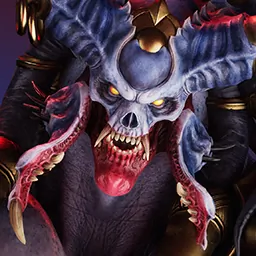
AkeronTerra
Most common pair: From the Abyss + Adaptive Plating (42%)
The two minor slots — pick one from each▾
Slot 1
-
Growing Threat 33% take it
At 16 minutes, gain +12% Bonus Damage and 5% Omnivamp permanently.
For late-game fighters: past a mid-game timer, permanent bonus damage and healing from all damage dealt.
-
From the Abyss 53% take it
Restore 0.2/0.4/0.7/1% Max Health/s (Levels 1/6/11/16) while in Hero Combat or out of enemy vision.
The usual pick: steady health regen during hero fights or while hidden from enemies.
-
Mana Siphon 14% take it
Ability hits on Enemy Heroes steal 10 (+1% of the target's Max Mana) Mana.
For mana-hungry heroes: ability hits on enemy heroes steal mana.
Slot 2
-
Adaptive Plating 72% take it
Taking damage grants matching Armor (1% per hit, stacks 10x).
The usual pick: taking damage grants matching armor, so you toughen up mid-fight.
-
Inescapable 12% take it
Enemies within 800u that dash/leap/blink are slowed 25% for 1.75s.
Against slippery heroes: nearby enemies who dash, leap or blink get slowed.
-
Terror 17% take it
Take 35% less damage from Minions and Monsters, and 25% less from Towers.
For junglers and tower divers: much less damage from minions, monsters and towers.
ManaHealing & lifestealToughnessDamage boostBasic attacksMovement speedVision
I hold the frontI cast abilitiesI keep allies alive
Major blessing — always onDecrease your size by 10%. Upon casting an ability, nearby enemy Heroes within 600 units are debuffed, dealing 4% decreased damage for 3.5s, stacking up to 3 times.
Why it's picked Casting abilities weakens the damage of nearby enemy heroes, stacking, and makes you smaller: some off-laners, junglers and supports take it to blunt enemy damage in close fights.
Who runs it · ranked, this patch
Support 2% · Offlane 2% of games in each role
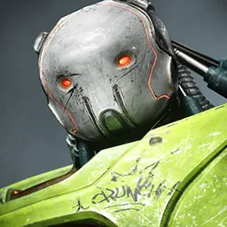
CrunchCrunchMacoShinbiRiktorMost common pair: Bioluminescence + Neurotoxin (31%)
The two minor slots — pick one from each▾
Slot 1
-
Bioluminescence 41% take it
Enemies you damage take 3% bonus Damage and are Revealed for 4s.
Against stealthy or slippery heroes: enemies you damage take extra damage and are revealed. Common partner for Neurotoxin.
-
Harmonic Currents picked 49% take it
Casting an ability restores 2.5% of your Missing Health and Missing Mana over 3s (1 tick on cast, then 3 once a second).
The most common pick: each ability cast restores some missing health and mana.
-
Diffusion 10% take it
Increases the radius of Pilow’s debuff pulse by 50% and its duration by 1.5s.
For big team fights: the weakening pulse reaches farther and lasts longer.
Slot 2
-
Neurotoxin 64% take it
Pilow additionally increases damage enemies take by 1.5% per stack.
The most common pick: the weakening also makes enemies take more damage per stack.
-
Convection picked 21% take it
Gain 4 Physical Armor and 4 Magical Armor for every active stack of Pilow on nearby enemy Heroes.
For front-liners: extra armor for each active weakening stack on nearby enemy heroes.
-
Lil Sucker 15% take it
Basic Attacks steal 2% of the target’s Movement Speed for 3s, stacking up to 3 times.
For chasing or sticking to targets: basic attacks steal movement speed.
“Picked” marks this project's default pair for the Eternal. Open a hero in the tool for a pick tuned to that hero and role.
Playing against it Standing next to them makes every attack weaker — step out of the 600-unit pulse between casts rather than brawling on top of them.
Gold incomeHealing & lifestealDamage boostCooldownsBasic attacksMovement speedGrows over the game
I cast abilitiesI dive and duelI scale late
Major blessing — always onTakedowns grant a stack of Fearless (max 6). Max Health is reduced by 6% (+6.5% melee / +7.5% ranged per Fearless), and you gain 4% (+4% per Fearless) increased Physical Power, Magical Power and Attack Speed. Fearless stacks are lost on death.
Why it's picked Takedowns build Fearless stacks that trade max health for more power and attack speed, lost on death: some junglers, carries and mid-laners take it to grow stronger from early kills. The Demonic Bargain minor adds gold income.
Who runs it · ranked, this patch
Jungle 3% · Carry 2% · Midlane 1% of games in each role
KhaimeraRevenantTwinBlast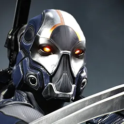
Kallari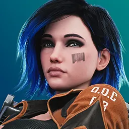
Skylar
Most common pair: Hellfire Strikes + Psychosis (22%)
The two minor slots — pick one from each▾
Slot 1
-
Demonic Bargain 41% take it
Gain 350 additional Gold at levels 1 and 10.
The most common pick for gold income: a lump of extra gold at two set levels.
-
Risen 24% take it
When at 3 or more Fearless stacks, gain 15% Omnivamp.
For heroes who keep stacks alive: once you hold enough Fearless stacks, heal from all damage dealt.
-
Hellfire Strikes 35% take it
Basic Attacks deal 1.5 (+1.25 per level) True Damage on-hit.
For auto-attack heroes: basic attacks deal bonus true damage that grows with level.
Slot 2
-
Broken Wings 30% take it
Your Movement Speed cannot be altered by items or abilities.
Against heavy slows: your movement speed cannot be changed, but speed boosts are lost too.
-
Rite 16% take it
Abilities cost an additional 5 (+2.5 per Level) Health to cast, but you permanently gain 15 (+1 per Level) Ability Haste.
For ability heroes: abilities cost some health, but permanently come back faster.
-
Psychosis 55% take it
Deal 3% (+0.3% per Level) more damage to the closest Enemy Hero, but 10% less damage to any other Enemy Hero.
The usual pick for divers locking one target: more damage to the closest hero, less to others.
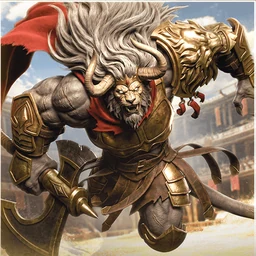
Thraex
Sustained Duelist
Carry · Offlane
Gold incomeHealing & lifestealToughnessDamage boostCooldownsUltimateBasic attacksMovement speedGrows over the gameHelps allies
I auto-attackI dive and duelI heal off damage
Major blessing — always onMark the last Enemy Hero damaged by your Basic Attack for 3s, increasing your damage against them by 3% (+0.4% per level) and reducing the damage they deal to you by 1.5% (+0.35% per level).
Why it's picked The last hero you basic attacked takes more damage from you and deals less to you, growing with level: off-lane and jungle fighters, plus some carries, take it for long one-on-one fights. The King minor adds gold income.
Who runs it · ranked, this patch
Offlane 19% · Jungle 19% · Carry 10% of games in each role
KhaimeraGruxGreystoneLegion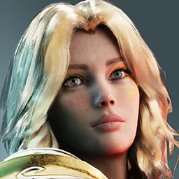
Serath
Most common pair: Savage Strikes + Ferocity (61%)
The two minor slots — pick one from each▾
Slot 1
-
Alpha's Court 21% take it
Deal 6% bonus damage when no allied hero is within 800 units.
For solo laners and junglers who fight alone: bonus damage when no ally is nearby.
-
Savage Strikes 74% take it
Deal 1.5 (+0.4 per level) Physical Damage On-Hit. Attacking an Enemy Hero increases this by 100% for 3s, stacking up to 3 times. Heal for the damage dealt.
The usual pick: extra damage on every hit that ramps against heroes and heals you.
-
The King 4% take it
Basic Attacks against Enemy Heroes grant you 6 gold.
For gold income: every basic attack on an enemy hero earns gold, great in lanes with constant trading.
Slot 2
-
Ferocity 83% take it
Gain 1% Total Attack Speed per 1s in Hero Combat, stacking infinitely.
The usual pick: attack speed keeps climbing the longer you stay in a fight with heroes.
-
Rallying Roar 14% take it
Gain 10 Ultimate Haste. Casting your Ultimate grants you and allies within 1500 units 25% Movement Speed for 4s. 20s cooldown.
For heroes whose ultimate starts fights: shorter ultimate cooldown and a speed boost for you and nearby allies.
-
Golden Mane 3% take it
Take 8% less damage from all non-AoE attacks and abilities.
Against single-target damage: you take less from attacks and abilities that are not area damage.
ToughnessArmor shredDamage boostCooldownsUltimateBasic attacksExecute & %health damageGrows over the game
I auto-attackI heal off damageI scale late
Major blessing — always onEvery 3rd consecutive Basic Attack on the same Enemy Hero within 2.5s deals 3% (+0.25% per Level) of their Max Health as bonus Physical Damage.
Why it's picked Every third basic attack in a row on the same hero deals bonus damage based on their max health: carries who auto-attack, plus some junglers, take it to break down tanks and high-health fighters.
Who runs it · ranked, this patch
Carry 21% · Jungle 4% · Offlane 3% of games in each role
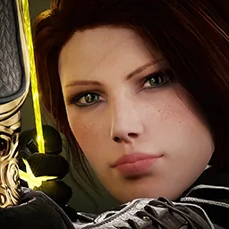
Sparrow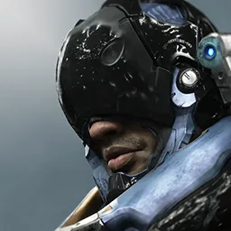
MurdockTwinBlast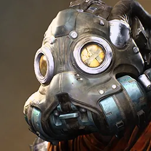
DrongoRevenantMost common pair: Serration + Melting Point (55%)
The two minor slots — pick one from each▾
Slot 1
-
Serration 84% take it
Vermis also deals 3.5% of the target's Missing Health as bonus Physical Damage.
The usual pick: the bonus hit also scales with missing health, so it finishes low targets faster.
-
Crush 14% take it
Immobilizing an Enemy Hero deals 8% of their Max Health as bonus Physical Damage, with an 8s cooldown per target.
For heroes with stuns or roots: immobilizing a hero deals a big chunk of their max health.
-
Mechadrive 3% take it
Basic Attacks reduce your Secondary ability’s current cooldown by 10% on-hit (5% against non-heroes).
For heroes whose secondary ability matters most: basic attacks keep shortening its cooldown.
Slot 2
-
Melting Point 60% take it
Deal 10% bonus damage to targets with more than 125 Physical Armor.
The usual pick: bonus damage against heavily armored targets, great when enemies stack physical armor.
-
Breach 30% take it
Ultimate damage reduces an Enemy Hero's Physical Armor by 35% for 4s.
For heroes with a damaging ultimate: it strips a target's physical armor briefly so your team hits harder.
-
Sub-Surface 11% take it
Take 7% less damage from AoE Abilities.
Against teams with many area spells: you take less damage from area abilities.
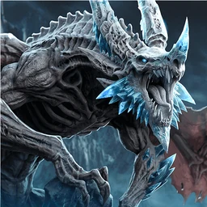
Vesh
Ability Damage Mage
Midlane · Support
ManaHealing & lifestealShieldsDamage boostCooldownsUltimateExecute & %health damageGrows over the game
I cast abilities
Major blessing — always onAbility damage dealt to Enemy Heroes deals 7% (+0.4% per minute) of that damage as a DoT over 3s.
Why it's picked Extra damage over time whenever your abilities hit enemy heroes, growing stronger each minute: mid-lane mages and other ability-damage heroes, including some supports and off-laners, take it to make every spell hit harder.
Who runs it · ranked, this patch
Midlane 57% · Support 17% · Offlane 16% of games in each role
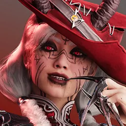
RennaGideonThe FeyDekkerGadgetMost common pair: Lich + Mind Rot (34%)
The two minor slots — pick one from each▾
Slot 1
-
Lich 54% take it
Gain 4%/7%/10%/14% Magical Lifesteal at Levels 1/6/11/16.
The common pick: healing from your spell damage that grows with level, for staying healthy in lane.
-
Tithe of Death 29% take it
Takedowns restore 15% Max Mana and permanently grant 2 Ability Haste, up to 30 Ability Haste.
Take it when you expect many kills and assists; each refills mana and permanently shortens your cooldowns.
-
The Tenth Seal 17% take it
At Level 10, gain 5% Ultimate Damage and 25 Ultimate Ability Haste.
For heroes whose ultimate is their main damage: from mid-game, a stronger ultimate that comes back sooner.
Slot 2
-
Mind Rot 60% take it
The major also deals 2% of the target's current health as bonus damage.
The common pick: the extra damage also takes a slice of the target's current health, best against healthy, tanky targets.
-
Phylactery 12% take it
After your Ultimate, gain 100% Cooldown Progression for 4s and a shield equal to 15% of Max Mana for 4s. 20s cooldown.
For heroes who follow their ultimate with more spells: briefly faster cooldowns plus a shield based on your mana.
-
Millennia 28% take it
Every 60s, increase your Ultimate Ability Damage by 0.75%.
For long games on ultimate-heavy heroes: your ultimate damage keeps creeping up every minute.
Gold incomeHealing & lifestealToughnessCooldownsBasic attacksExecute & %health damageGrows over the gameFarming & camps
I auto-attackI dive and duel
Major blessing — always onDamaging an Enemy Hero below 30% Health fires 4 (+1 per 30% Bonus Attack Speed) projectiles that each deal 7 (+1 per level) True Damage. Missiles travel through walls and disappear after 3000u. 10s cooldown per Hero. On-hit effects apply at 20% effectiveness.
Why it's picked Hitting a low-health hero fires missiles of true damage that pass through walls: carries who auto-attack and some junglers take it to finish kills. The Forage minor adds gold income from minions and monsters.
Who runs it · ranked, this patch
Carry 36% · Jungle 17% · Offlane 7% of games in each role
SparrowTwinBlastDrongoSerathMurdock
Most common pair: Forage + Wind-Rider (33%)
The two minor slots — pick one from each▾
Slot 1
-
Forage 62% take it
Gain 3 additional Gold and 3 additional XP per Minion or Monster kill.
The usual pick for gold income: extra gold and experience from every minion and monster kill.
-
Dryad’s Boon 31% take it
Basic Attacks decrease basic ability cooldowns by 0.15s on-hit.
For heroes who mix abilities with basic attacks: each hit shortens basic ability cooldowns.
-
Natural Resistance 7% take it
Cleanse all crowd control and gain 400 Tenacity when below 25% Maximum Health. Cleanse has a 20s cooldown.
Against heavy stuns and roots: when very low, you break free and resist crowd control.
Slot 2
-
Wind-Rider 52% take it
Gain 15% (+1% per Level) Bonus Attack Speed for 4s after using a Dash, Leap, Teleport, or upon leaving Stealth.
The usual pick for heroes with dashes or stealth: faster attacks right after using them.
-
Barkskin 13% take it
Deal 3 (+1 per Level) Physical Damage to Enemy Heroes that Basic Attack you, triggering On-Hit effects at 50% effectiveness.
Against auto-attackers in lane: enemies who basic attack you take damage back.
-
Taproot 35% take it
Basic Attacks restore 1 (+6% Bonus Physical Power) Health on-hit. Does not heal from Tower damage.
When you need healing in lane: basic attacks heal you, more with physical power.
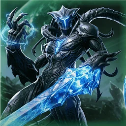
Xyris
Scaling Carry
Carry · Midlane
ManaHealing & lifestealDamage boostBasic attacksGrows over the gameFarming & camps
I scale lateI auto-attackI heal off damage
Major blessing — always onDeal 3% bonus damage, increased by 0.4% per 10 units killed, up to 400 units.
Why it's picked Bonus damage that keeps growing as you kill minions and monsters, up to a cap: carries who farm, plus some junglers and off-laners, take it to grow stronger the more they clear.
Who runs it · ranked, this patch
Carry 11% · Jungle 4% · Midlane 3% of games in each role
RevenantMurdockDrongoLegionTwinBlast
Most common pair: Iron Will + Bone Collector (38%)
The two minor slots — pick one from each▾
Slot 1
-
Furor 28% take it
Entering Hero Combat grants 20% Total Attack Speed for 4s.
For short fights: a burst of attack speed each time you start fighting heroes.
-
Dominance 16% take it
Takedowns heal you for 100 (+15% Missing Health).
When you chain fights: each takedown heals you, more when you are low.
-
Iron Will 56% take it
Restore Health equal to 3% of Basic Attack damage dealt, increased to 6% for Critical Strikes.
The usual pick for critical strike carries: basic attacks heal you, more on critical strikes.
Slot 2
-
Cull the Weak 27% take it
Deal 7% bonus damage to Minions and Monsters, and restore 1% Missing Mana on unit kill.
For faster farming: more damage to minions and monsters, and mana back on each kill.
-
Bone Collector 53% take it
After killing 150 units, permanently gain 20% Critical Chance.
The usual pick for farming carries: after enough kills you permanently gain critical strike chance.
-
Eviscerate 21% take it
Deal +15% bonus damage to targets above 80% Health.
For burst heroes who open fights: bonus damage to targets near full health.